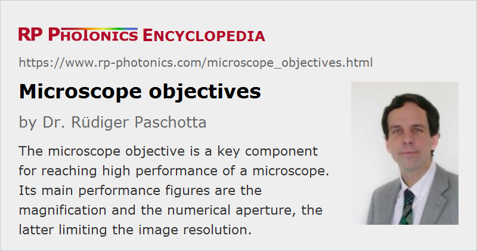

Microscope Objectives
Definition: the optical component of a microscope which is next to the observed object
More general terms: objectives
German: Mikroskopobjektive
Categories: vision, displays and imaging, optical metrology
How to cite the article; suggest additional literature
Author: Dr. Rüdiger Paschotta
The microscope objective is a key component for reaching high performance of a microscope. It is the part which is placed next to the observed object, usually in a fairly small distance of a few millimeters. Usually, the microscope objective produces an intermediate image in the microscope, which is then further magnified with an eyepiece (ocular lens). Particularly in cases with high magnification, most of the magnification is provided by the objective.
Most microscopes objectives are based on refractive optics, containing several lenses. For example, a simple low-NA objective may contain a meniscus lens and an achromat. A high-NA objective typically contains a more complicated combination of various types of lenses of hemispherical, meniscus, achromatic doublet and triplet type.
There are also reflective objectives, containing curved mirrors and no lenses. They are naturally achromatic and may be advantageous for operation in extreme wavelength domains. Also, they can exhibit lower losses of optical power.
Magnification
Microscopes often contain multiple objectives on a rotatable nosepiece, for example a scanning lens with only 4 × magnification, an intermediate one (the small objective lens) with 10 × and a high-resolution large objective with 40 × or 100 × magnification. The eye piece may contribute another factor 5 or 10 in magnification, for example.
Note that a large magnification alone is not helpful if it only makes images larger without increasing the level of detail; see below the section on the numerical aperture.
There are also often color-coded rings indicating different magnification values, e.g. black for 1 ×, yellow for 4 ×, green for 10 ×, etc.
Focal Length
The focal length of a microscope objective is typically between 2 mm and 40 mm. However, that parameter is often considered as less important, since magnification and numerical aperture are sufficient for quantifying the essential performance in a microscope.
Numerical Aperture
The higher the magnification, the higher is also the required numerical aperture, because this is the factor which ultimately limits the achievable image resolution. There are different ways of calculating the image resolution and are slightly different circumstances, but they lead to similar resolution values, which are roughly λ / (2 NA), where λ is the optical wavelength (about 400 to 700 nm) and NA is the numerical aperture. For example, an NA of 1 allows for an image resolution of roughly 250 nm for green light. For low magnification, an NA of 0.1 may be fully sufficient.
The highest numerical apertures achievable with dry objectives, operated with air between the objective and the object, are approximately 0.95. Substantially higher values of e.g. 1.5 or even higher can be achieved with immersion objectives, where the gap between the object and the objective is filled with a liquid – water or some immersion oil with a higher refractive index, often somewhat above 1.5. Optimized immersion oils do not only have a high refractive index, but also a suitable viscosity and a low tendency for producing stains on the surfaces. They can be left on an objective over longer times without damaging it.
Note that oil immersion may not work properly e.g. when observing a biological sample in an aqueous solution and the oil is only between the cover slip and the objective. One may have to use special water immersion objectives for such cases.
Optimal illumination may also require oil immersion on that side.
Image Correction
Particularly for objectives with high numerical aperture, a high image quality can be achieved only with substantial efforts for correcting various kinds of optical aberrations such as spherical, astigmatism, coma, field curvature, image distortion and chromatic aberrations. For example, plan-apochromatic objectives, having particularly sophisticated designs, provide optimum flat field correction combined with good achromatic properties.
Chromatic aberrations essentially result from the wavelength dependence of focal length. They lead to colored image distortions. For conventional microscopy, they can be quite relevant, in contrast to other types of optical microscopy, e.g. certain types of laser microscopy. Best suppression of chromatic aberrations is achieved with apochromatic objectives.
At least for high magnifications, the influence of a cover slip in terms of chromatic and spherical aberrations can be quite important. Therefore, objectives for use in fields like biology, where cover slips are often needed, are designed with integrated cover slip correction. The correction is often done for a standard slip thickness of 170 μm. A deviation of only 10 μm can already be quite problematic for an objective with a high NA of e.g. 0.95. Some objectives allow the adjustment of the corrected cover slip thickness.
Note that some microscope designs count on the correction of some residual aberrations of the objective by the ocular lens.
Unfortunately, perfect solutions are not available; therefore, one has to accept certain trade-offs, which lead to different optimized solutions for different applications. For example, optimum flat field properties are most important for measurement microscopes; one may then tolerate somewhat larger chromatic aberrations.
Finite-corrected and Infinity-corrected Microscope Objectives
Older microscopes usually require finite-corrected objectives. Here, the object is supposed to be placed a little below the front focal plane of the objective, and the intermediate image occurs at a finite distance of e.g. 160 mm from the objective. Such an objective is designed for minimum image distortions in that configuration.
Finite-corrected objectives are always designed for a certain tube length, e.g. according to DIN or JIS standard (which differ by 10 mm in tube length). Using an objective of the wrong standard may significantly deteriorate the obtained image quality.
Modern microscopes mostly require infinity-corrected objectives, where the intermediate image of the objective alone lies at infinite distance. Here, one requires an additional tube lens in the microscope for generating the intermediate image at the diaphragm of the eyepiece.
The article on microscopes explains the advantages of microscope designs based on infinity-corrected objectives.
Wavelength Range
Optical microscopes usually work based on imaging with visible light, i.e., in the wavelength region from 400 nm to 700 nm. Therefore, most microscope objectives are optimized for that wavelength range, with most emphasis on the region from 480 nm to 640 nm. However, there are objectives with an enhanced range of e.g. 400 nm to 950 nm, and others which work further in the infrared. For example, that is required for laser microscopes where infrared laser beams need to be transmitted.
Note that it is essential not only to have a good transmittance over the full wavelength range, but also achromatic performance. In conventional light microscopes, this is needed to avoid colored image distortions. In confocal multi-photon fluorescence microscopes, it is important to have the same focus positions for infrared laser light as for the fluorescence light.
Labels on Objectives
The key parameters are often easily found on laser-engraved labels on the outer barrel of an objective. Some examples:
- The label “50× / 0.8” indicates a 50 × magnification and a numerical aperture of 0.8, probably of a dry objective.
- “100× / 1.30 oil” indicates a 100 × magnification and a numerical aperture of 1.30, reached with immersion oil.
- “∞ / 0.17” indicates an infinity-corrected objective with compensation of spherical aberrations for a cover slip thickness of 0.17 mm, while “160 / 0.17” indicates a finite-corrected objective for microscopes with 160 mm tube length and the same cover slip thickness.
- “WD 0.21” indicates a working distance of 0.21 mm.
- “DIC” indicates a design for differential index contrast imaging.
- “plan fluor” indicates a plan-apochromatic objective, i.e., with flat field correction and apochromat properties.
- “DIN” indicates that the objective is made according to the DIN (Deutsche Industrie Norm) microscope standard concerning the tube length, while “JIS” indicates the Japanese standard with somewhat longer tube.
Threads for Microscope Objectives
In most cases, a microscope objective is mounted on the nosepiece of a microscope using a thread. Unfortunately, there are different thread sizes used by different manufacturers and for objectives of different kinds. In some cases, special adapters can be used for applying an objective to a microscope with different threads.
Objectives for dark-field illumination are tentatively larger, providing extra space for the illumination light; therefore, they are typically used with larger threads.
Other Qualities of Microscope Objectives
Another practically important factor is the working distance, i.e., the distance between the objective and the object. Small working distances are generally required for objectives with high NA, but also can to some extent be optimized as a design goal (possibly somewhat compromising the NA or the correction). For objectives with oil immersion, a relatively small working distance is actually good, since otherwise one would require more of the immersion fluid, and that would be more difficult to hold in place.
Some microscopes allow the injection of illumination light through the objective to the sample. It is then important that there is no significant scattering of light in the objective.
Design of Microscope Objectives
Although a microscope objective is sometimes called the objective lens, it usually contains multiple lenses. The higher the numerical aperture and the higher the required image quality, the more sophisticated designs are needed. High-end microscope objectives may also involve aspheric lenses.
The design of a high quality microscope objective is a rather sophisticated task, for which substantial optics expertise and powerful optics design software are required. Such designs involve complicated trade-offs, which should be properly handled according to the importance of different aspects for a particular application.
Beam Focusing and Fiber Coupling with Microscope Objectives
Microscope objectives are sometimes used for applications outside microscopy. For example, they can be used for tight focusing of laser beams, with spot sizes of a few micrometers or even below 1 μm. If the input beam is a collimated beam, an infinity-corrected objective will work best. The objective should have a numerical aperture which fits well to the beam divergence related to the required spot size. The input beam radius should also be chosen appropriately, i.e., calculated from the required spot size and the focal length. A difficulty may be to find out the focal length, as the objective barrel often only indicates the magnification, and the conversion to the focal length depends on the microscope design.
Another application is launching light into a single-mode fiber or collimating light from such a fiber. Again, the objective should have an appropriate numerical aperture of the order of that of the fiber. For more details, see the article on fiber launch systems.
For such applications, chromatic aberrations are often no issue, so that one does not exploit the chromatic correction of the objective. Also, a wide field of view would not be required. On the other hand, a microscope objective for visible light may well not have ideal properties e.g. for launching near infrared light into a fiber, and its power handling capability is limited (but usually not specified). Therefore, a microscope objective may not be the ideal solution for such an application. However, it may have to be used, e.g. if no other lenses are available for reaching the required small spot size.
Suppliers
The RP Photonics Buyer's Guide contains 28 suppliers for microscope objectives. Among them:
Questions and Comments from Users
Here you can submit questions and comments. As far as they get accepted by the author, they will appear above this paragraph together with the author’s answer. The author will decide on acceptance based on certain criteria. Essentially, the issue must be of sufficiently broad interest.
Please do not enter personal data here; we would otherwise delete it soon. (See also our privacy declaration.) If you wish to receive personal feedback or consultancy from the author, please contact him e.g. via e-mail.
By submitting the information, you give your consent to the potential publication of your inputs on our website according to our rules. (If you later retract your consent, we will delete those inputs.) As your inputs are first reviewed by the author, they may be published with some delay.
See also: microscopes, objectives, numerical aperture
and other articles in the categories vision, displays and imaging, optical metrology
|  |
If you like this page, please share the link with your friends and colleagues, e.g. via social media:
These sharing buttons are implemented in a privacy-friendly way!